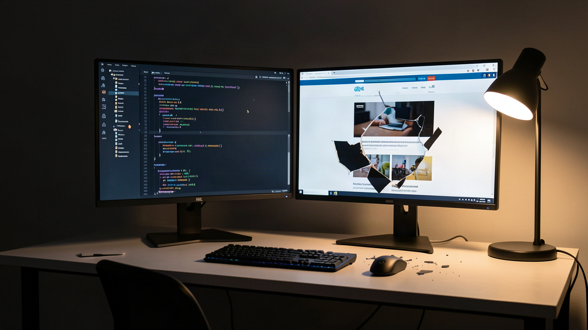
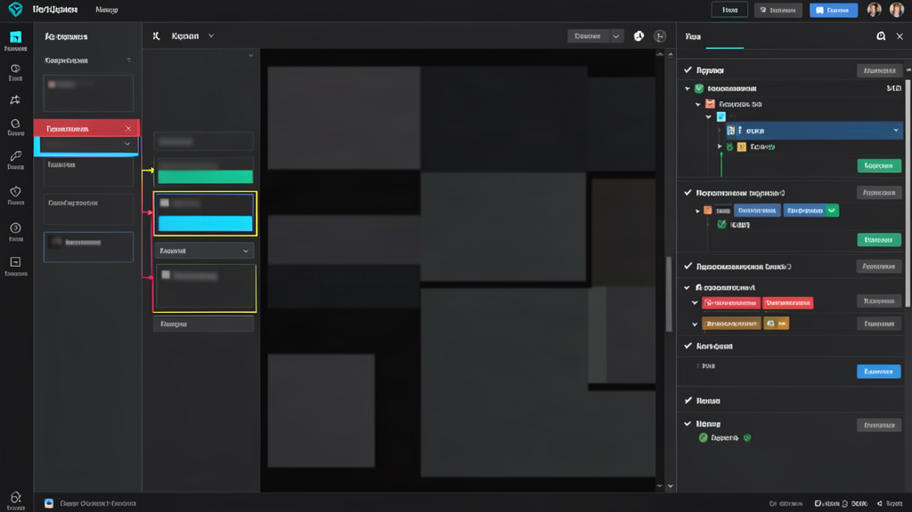

Попытка верстать фронтенд через консольного агента — изощренная пытка. Нам обещали автономность: набрал команду в терминале, и модель переписала компоненты. На практике сидишь перед темным экраном и вслепую скармливаешь правки: «сдвинь карточку на восемь пикселей вправо, уменьши отступ заголовка и проверь кнопку».
Агент рапортует об успехе, обновляешь браузер — а там все поехало еще сильнее. И начинается круг слепого спама промптами.

Парадокс слепого интерфейса: когда текст бессилен перед пикселями
Казалось бы: современные модели отлично понимают синтаксис CSS, разбираются в Flexbox и Tailwind. Но между кодом разметки и готовым экраном лежит фундаментальный барьер.
Терминальный агент работает вслепую: видит дерево файлов, код компонентов и логи, но не видит, как элемент рендерится в окне браузера или почему кнопка наезжает на соседнюю плашку.
Чтобы исправить визуальный сбой, приходится переводить оптический образ в словесную инструкцию: вычленять селекторы, описывать отступы и набивать абзац текста в консоль. Это медленно, неточно и сжигает контекст модели на переспросы.
Вместо ускорения вы превращаетесь в медленный интерфейс ввода между экраном и консолью. Разработка упирается в потолок текста.
Клик вместо простыни промпта: как устроен гибридный контур
Для связки Claude Code и Codex выкатили среду Sharrowkin, которая бьет именно в эту болевую точку.
Концепция предельно практична: поверх консольных кодинг-агентов натягивается среда с визуальным инспектором и панелью дебага. Вы больше не описываете словами, какой блок переделать. Вы кликаете по элементу в инспекторе — и задача вместе с контекстом узла улетает модели.
Сделано прямо по-человечески:
- Визуальный таргетинг: клик в инспекторе точно указывает агенту на нужный DOM-узел и компонент.
- Мгновенный дебаг: панель сразу подсвечивает упавшие тесты и ошибки сборки в едином окне.
- Чистый контекст: агент получает адресный срез стилей и состояния, а не простыню догадок.
Никакого слепого спама в терминале. Вы возвращаете себе роль архитектора: указываете на проблему кликом, а агент берет рутину правок и тестов.

Архитектурный рефрейм: почему консоль проигрывает визуалу
Я смотрю на этот сдвиг через призму собственного опыта. В моих сценариях с цепочками n8n и локальными агентами в Antigravity CLI терминал идеален для бэкенда, баз данных и скриптов. Там все дискретно: входные данные, выполнение функции, код ответа.
Но пользовательские интерфейсы устроены иначе. Это непрерывное визуальное пространство.
Вот вам вся разница между логикой и версткой: логику можно валидировать тестами и типами, а верстку мы оцениваем глазами. Навязывать чисто консольный цикл там, где результат визуален — это архитектурная ошибка взаимодействия человека и машины.
Визуальная привязка сокращает цикл обратной связи. Модель получает точечную задачу, а разработчик видит результат правки в соседней панели без переключения окон.
Сухой остаток: куда смещается фокус соло-разработки
Для солопренеров и инди-хакеров скорость сборки первого экрана — вопрос выживания проекта. Часы, слитые на ручную подгонку стилей и слепую переписку с терминалом, не создают ценности.
Я считаю, что культ «чистого терминала» для фронтенда уходит в прошлое. Будущее кодинг-агентов не в скорости печати промптов, а в отказе от перевода зрительного восприятия в текст.
Держать в голове одну мысль: побеждает система, где петля обратной связи между действием человека и ответом модели минимальна. Если для решения визуальной задачи быстрее кликнуть по кнопке в инспекторе, консоль обязана уступить место визуальному слою.
А как вы верстаете интерфейсы с ИИ-ассистентами: скармливаете правки в терминал вслепую или используете визуальные инструменты с инспектором? Напишите в комментариях, сколько времени у вас уходит на ручную полировку верстки за моделями.